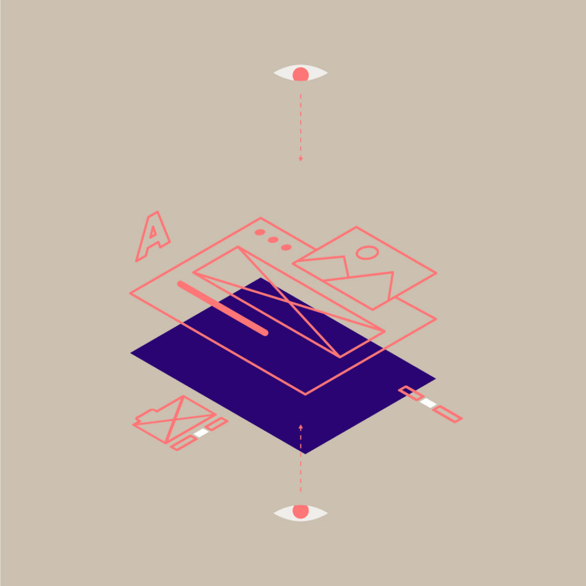

UX Design systems are a must-have for companies pursuing organizational growth, product innovation, and customer experience. As design system teams delve into the task of putting your system together, they assess the elements that will go into the system. These elements may then be utilized by web designers and engineers to create new web pages or full websites. In the following post, you’ll learn more about this process and how components structure a sound design system plan.
Components are so much more than a group of elements like fonts, typeface, size, spacing, and imagery. Within the UX Design System, your components are the building blocks to a single source of truth that can be referred to during product design and an effective shared language that all team members can use when working on a product. The UX design system team architects a primary source of information that everyone in your company can go back to when making business decisions.
Putting All Your Components In One Basket
Jina Anne an expert who has worked on Design Systems and special projects for Salesforce, Apple and Amazon, has this great analogy (inspired by Game of Thrones) to help you see how components fit into the overall design system machine. “Egg Mode” describes four phases of design system planning:
- Gather
- Hatch
- Baby Dragon
- Big Dragon
Your components are an essential part of the ‘Gather’ phase. As the egg begins to hatch your development marries design and standards to build a system of reference. As your hatchling becomes a baby dragon it grows, empowering designers, developers, and engineers to update and maintain your Design System in the best and most efficient way possible. Until finally, the ‘Big Dragon’ lives on, evolving and optimizing with the clear goal of building products based on principle over guidelines.
Design system components are part of more than just a library of parts. These seemingly straightforward assets are actually the bedrock of your production and scaling.
Determine Your Components
Before your team can build and test design system components, they have to determine which ones are integral to the project. This begins with an inventory of what components your system is currently using. To be clear, when we talk about components, we are speaking specifically to the group of web design elements (font, spacing, type, color, etc.) and code snippets within the scope of a design system. That means they are generated under the style and guidelines created by your team’s designers, developers, and other collaborators. These elements abide by a single source of truth that guides your design system team in their objectives.
- Building groundwork and a strategic plan for your design system
- Creating unity and consistency
- Building scope and accountability for all components
- Identifying how components will adapt to responsive environments
Once the inventory of your components is complete, your design team will work to streamline them for the system. Just as cross-collaboration is important in designating your UX design system team; it’s essential to have representation from development, design, and product to assess which components need to be built and maintained in the system.
Creating a Shared Language
“Building components from page designs is like starting from the outside and working in—and that can get complicated.” – Charlotte Jackson
With a team that consists of experts from different disciplines, creating a shared language is crucial to your UX design system planning. By looking at each component and its function as a team, your team creates a more effective system.
Developer and product manager Charlotte Jackson advocates pattern thinking to achieve this goal. Her method consists of printing out web page designs, then cutting out each component into its smallest element. The team then works with these smaller, tactile pieces to group the components and remove duplicates.
Web designer, speaker, and writer Brad Frost presents another method, interface inventory. The process is more or less the same, but instead of printing and cutting out components, the team creates screenshots. Whichever method your team uses, the goal is to find redundancy and remove it.
Pull Back to Move Forward
Both practices encourage design system teams to think about each component at a granular level. Along these same lines is the concept of Atomic Design. With terms borrowed from your intro-level chemistry course, Atomic Design helps your team break down each component in a way that boosts consistency and scale-ability. The methodology goes like this:
- Atoms – represent the HTML tags that build your web forms.
- Molecules – represent forms that HTML tags create.
- Organisms – represent the sections made by tags and forms.
- Templates – provide context to sections.
- Pages – where the final designs come together.
Basically, the idea is that you can break down your components to the most basic element to make them more reusable. Throughout the design system process, your team is finding ways in which to boil down the components of your brand to their most essential ingredient—freeing up your development from repetitive tasks and creating cost-effective adaptability.
Hierarchy of Design System Components
Another interesting way to evaluate design system components is by order of importance. Econsultancy released a guide to help teams figure out what components can be most helpful to your company’s current and future goals. They are:
- Viability
- Consistency
- Predictability
- Friction & Flow
- Brand

Viability sits at the top of this list because it is the most important part of your components. The question is not what components need to go into the system. It’s actually what components do my end-users need to take action with our brand? Determining how viable your components are forces your team to always take into consideration the needs of consumers.
Likewise, consistency and predictability help your end-user easily identify your brand and complete the actions needed to fulfill their objective. Forbes recently reported that nearly 70 percent of consumers feel more loyalty toward the brands and organizations that make it easy and convenient to engage with them. Your design system components support these attributes by setting clear guidelines for branding and development.
Friction and flow determine the structure of your system and how you ultimately want to promote or impede the specific actions of your users. Smartphone makers are savvy to this; enabling users to bypass the login and instead use a fingerprint to access their information quicker. Some brands impede cancellation requests by forcing consumers to call rather than complete online. At the bottom of the hierarchy is your brand, which plays into all of these aspects. It fulfills the emotional needs people have to become loyal advocates of your business.
The Takeaway
Ultimately, your design system components feed into the larger goals of your system—boost profits, drive conversions and build efficiency. As your team discerns which components to add to your design system; they learn collaborative thinking methods that create a shared language and workspace—strengthening your team, and your system too.
At Isadora Agency, we dedicate ourselves to changing the way brands connect with audiences in the digital world. We assist brands in developing an effective UX design system, made from scratch and customized to fit your brand’s needs.